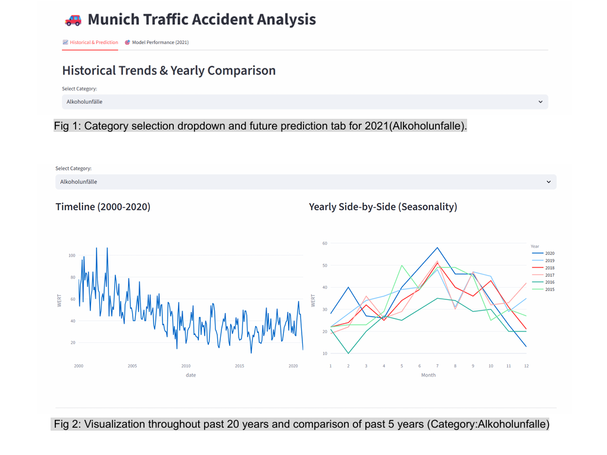
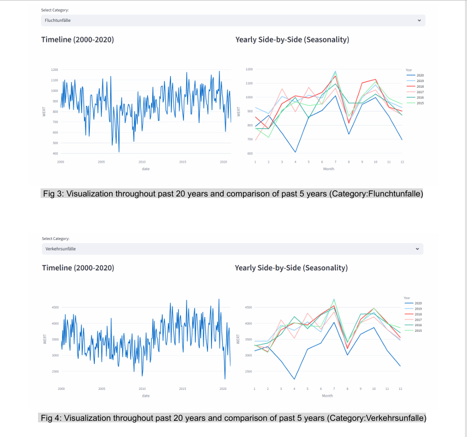
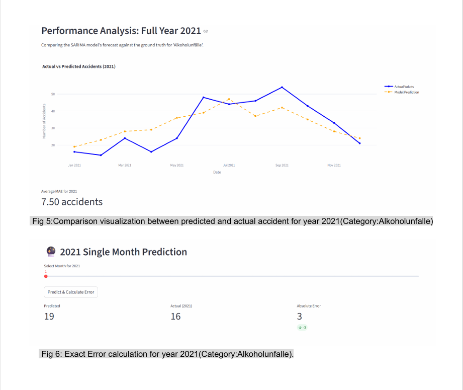

← Back to all projectsACADEMIC PROJECT / 02
Accident forecast using SARIMA model.
Historical accident reporting identifies where accidents happened in the past, but fails to predict future high-risk periods or underlying causes. Without predictive foresight, risk management teams cannot proactively deploy emergency response, law enforcement, or safety measures. This project models future accident trends and pinpoints root causes, turning reactive data into an actionable risk management system that enables targeted, preventive interventions.
Problem statement
To prevent future accidents by predicting it and analysing cause region by region.
Approach
1. Data Cleaning (Python)
Collected 20 years of accident records and used Python to fix broken formats, fill missing details, and fix errors that built up over two decades.
Converted raw accident reports into a clean, monthly timeline ready for statistical analysis.
2. Accident Forecasting (SARIMA Model)
Used a time-series model (SARIMA) that looks at past monthly patterns and seasonal trends to predict future accident counts.
Tested the model against real past data, reaching an accuracy rate of ~97% (~3% error).
3. Root Cause & Risk Analysis
Grouped accidents by primary cause (e.g., speeding, weather, peak hours) alongside overall volume predictions.
Created a tool to show when accidents are likely to jump and why they happen.
4. Dashboard & Impact
Built an interactive dashboard so decision-makers can easily see upcoming high-risk months and targeted causes.Turned historical data into a proactive risk management tool, helping authorities send emergency teams and police to the right places before accidents happen.
Tools & techniques
PandasNumPyMAPE
Key Findings & Results
-
High-Precision Predictive Planning: Built a SARIMA time-series model that achieved a ~3% prediction error rate (~97% accuracy), giving decision-makers a reliable tool to forecast accident volumes and plan emergency coverage months in advance.
-
Root Cause Risk Identification: Pinpointed key seasonal accident spikes and underlying drivers (e.g., speeding, weather, peak hours), shifting safety operations from reactive incident handling to targeted risk mitigation.
-
Proactive Resource Allocation: Developed an interactive dashboard that solves the risk management challenge of delayed response-enabling authorities to pre-deploy law enforcement and ambulances to high-risk areas before accidents occur.
Execution screenshots



Project repository
View project on GitHub ↗← Back to all projects